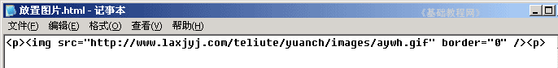
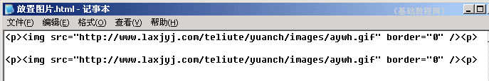
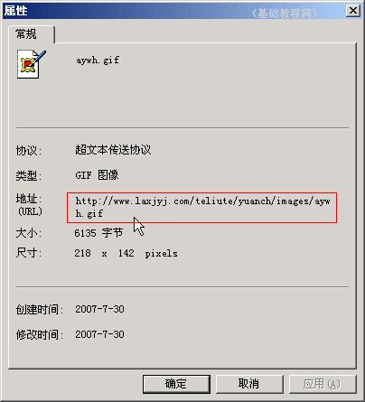

HTML 基础入门教程
四、放置图片 返回
前面我们学习的是文字效果，这一课我们来学习，如何在页面中放置图片，下面我们来看一个练习；
1、启动记事本
1）点击“开始－所有程序－附件－记事本”；
2）记事本的窗口主要包括标题栏、菜单栏、工作区，左上角有一个一闪一闪的光标插入点竖线；

3）点菜单“文件－保存”命令，以“放置图片.html”为文件名，类型为“所有文件”，保存文件到自己的文件夹，注意文件名后缀为英文字母；
2、输入内容
1）在工作区中输入下列内容：

这儿的img就是图片标识，后面的src是图片地址，border是边框；
2）按Ctrl＋S组合键保存一下文件，按两下回车键，接着输入下列内容，这次把边框加上：

复制图片地址的方法是，在图片上敲右键选“属性”命令，复制中间最长的一段；

3）按Ctrl＋S组合键保存一下文件，在自己的文件夹中找到“放置图片”文件，双击打开，看一下页面效果；

注意：如果不能上网，则按下列操作：
1）把本课文件夹中的 aywh 文件复制到自己的文件夹中，
2）把代码中改成 <p> <img src="aywh.gif" border="0" /></p>
本节学习了设置字体、字号、颜色的基本方法，如果你成功地完成了练习，请继续学习下一课内容；
本教程由86团学校TeliuTe制作|著作权所有
基础教程网：http://teliute.org/
美丽的校园……
转载和引用本站内容，请保留版权信息和本站链接。